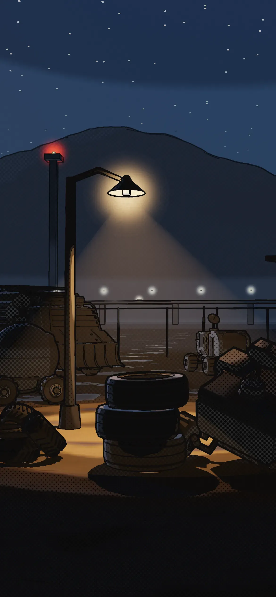

Help
I bought THE WHOLE ROAD on another iPhone
At the camp, open THE TRADER and tap RESTORE PURCHASES. Use the same Apple Account you bought it with.
Where is my progress kept?
On your iPhone. Your camp, your rigs and how far up the road you are stay there between launches. Deleting the app deletes them.
A boss keeps wiping my squad
That's on purpose: a weak squad gets wiped. Back at the camp, the end card says what to build next and where to earn it. Clearing a road for the first time pays the most, so try the roads you haven't cleared. If a road has beaten you twice, you can turn on Steady Hands: one more plate for everyone until you win it.
How do I dodge a boss?
Bosses warn you first: a red line on the road, a ring, or half the road lit. Slide the squad out of it before it hits.
Sound, music and vibration
Pause during a push, or open the camp's settings, and switch each one on or off.
Does Strike need the internet?
No. It works offline and sends nothing. The privacy policy says more.